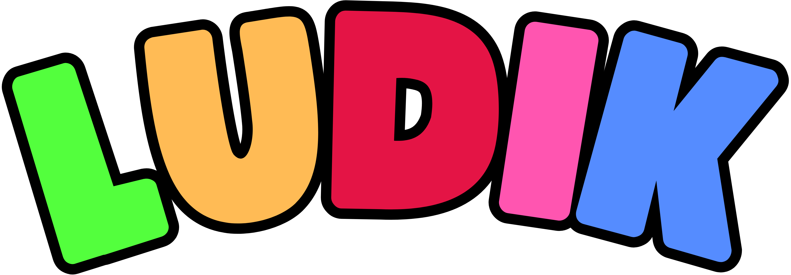

MENÚ

Panel De Control
👤
Perfil
👥
Estudiantes
➕
Crear Cuentas
👥
Modificar cuentas existentes
📚
Actividades
🤖
Asistente IA
📝
Registrar un nuevo estudiante
📋
Registrar un PIAR y diagnóstico médico
📊
Valoraciones Pedagógicas
📝
Modificar asignación de los docentes
📁
Documentos
💬
Comunicate
📘
Manual de Usuario
❓
Ayuda
🚪
Cerrar Sesión